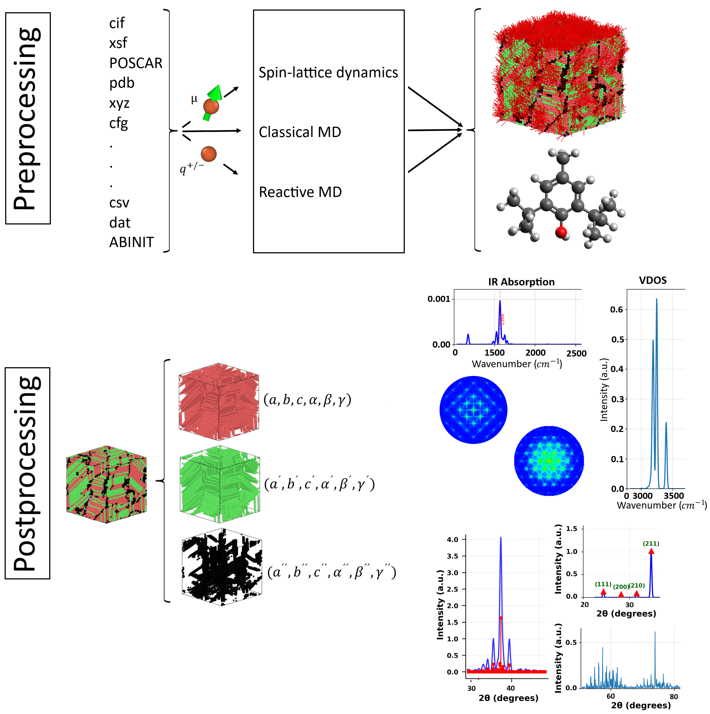

Virtual Characterization Lab (VCL)

The Virtual Characterization Lab (VCL) is an open-source toolkit for virtual materials characterization, designed to connect high-fidelity simulations—primarily Molecular Dynamics (MD)—with established experimental techniques. It provides an integrated, GUI-based environment that streamlines the entire workflow from structure preparation to the generation of virtual experimental data.
VCL focuses on:
- Pre-processing: preparing structures and input files for classical MD, reactive MD (RMD), and spin-lattice dynamics (SLD)
- Crystallographic and structural analysis: analyzing crystal structures, defects, and structural evolution from simulations
- Virtual characterization: computing XRD, SAED, VDOS, and IR spectra that are directly comparable to experimental measurements
By unifying these steps in a single framework, VCL reduces the need for multiple disconnected tools and formats, thereby accelerating materials discovery and improving the comparability between computational and experimental data.
Key Capabilities
- Unified GUI workflow for pre-processing, analysis, and post-processing
- Crystallographic analysis of structures and trajectories
- Virtual diffraction and spectroscopy:
- X-ray Diffraction (XRD)
- Selected Area Electron Diffraction (SAED)
- Vibrational Density of States (VDOS)
- Infrared (IR) spectra
- MD-centric design, but applicable beyond MD, supporting flexible system sizes, boundary conditions, and extended methods such as RMD and SLD
- Direct comparison to experiment, enabling validation of structures, screening of candidate materials, and generation of training data for machine-learning models
Documentation Structure
The documentation for VCL is organized into the following main components:
-
Input Converter
Tools and workflows for converting structures and simulation outputs into VCL-compatible formats and for setting up inputs for different simulation engines and methods. -
Structure Analyzer
Functionality for structural and crystallographic analysis, including symmetry, defects, and time-dependent structural evolution. -
SAED
Methods and settings for computing Selected Area Electron Diffraction (SAED) patterns from simulated structures and trajectories, and strategies for comparison with experimental TEM data. -
Vibrational Analysis
Computation and analysis of vibrational properties, including Vibrational Density of States (VDOS) and IR spectra derived from MD simulations. -
XRD
Generation and analysis of X-ray Diffraction patterns, including configuration of scattering geometries and routines for comparing simulated and experimental XRD data.
VCL aims to make virtual characterization efficient, accessible, and directly comparable to experiment, enabling researchers to narrow experimental search spaces, validate new materials, and support data-driven approaches in materials science.